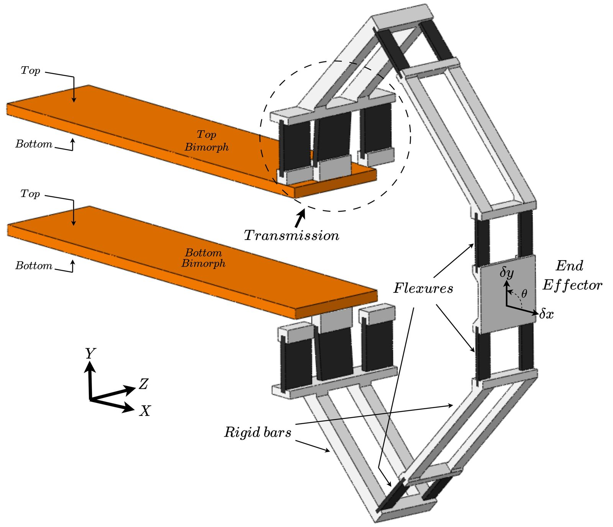
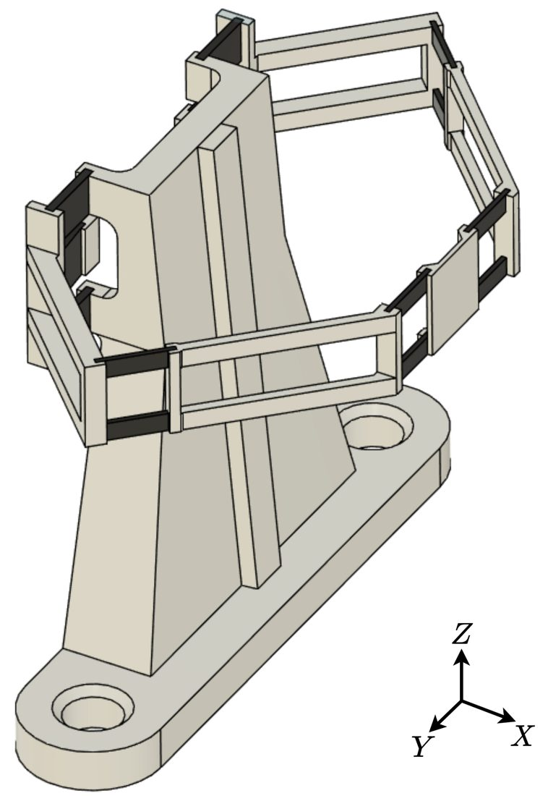
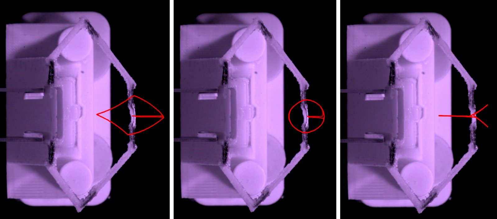

Overview
Small robots for tasks like pick-and-place and micro-positioning need precise, fast motion, but conventional robots rely on many assembled joints that are hard to build at the millimeter scale. My Master's thesis set out to design a mesoscale parallel robot that could be 3D printed as a single part, using compliant flexure joints in place of pins and bearings, and driven by piezoelectric bimorph actuators.
My role
This was my M.Sc. thesis in York University's Responsive Materials & Robotics Laboratory, supervised by Dr. Ryan Orszulik. I took the robot from concept to working prototype: characterizing the actuators, designing the transmission, building the kinematic and finite element models, designing the test rig, and running the experiments.
Approach
- Actuators: modeled commercial piezoelectric bimorphs in ABAQUS and verified deflection and resonance against manufacturer specs and laser displacement measurements.
- Transmission: used a compliant transmission I designed to convert each actuator's sub-millimeter stroke into large rotation.
- Robot design: combined two 3R chains into a six-bar planar parallel robot, so two actuators control the end effector in X and Y.
- Modeling: built a simplified kinematic model to find the parameters that maximize workspace, then a full ABAQUS model including the actuators and transmissions to predict movements, workspace and resonant frequencies.
- Trajectory generation: mapped the workspace by sweeping a grid of input voltages, then built a transformation from desired end-effector positions to actuator voltages to drive paths such as a circle and the letter Y, using MATLAB tools I wrote.
- Fabrication: printed in flexible Agilus30 and rigid VeroWhite on an Objet Connex500 PolyJet printer, oriented so the critical flexures print with 28 µm accuracy through their thickness.
- Testing: drove the actuators from Simulink through a Speedgoat real-time machine and high-voltage amplifier, and tracked motion with a Chronos 2.1 high-speed camera and ProAnalyst.
Results
- A 37.88 × 20.54 mm robot with a 14.36 × 8.66 mm workspace (65.6 mm²), a workspace-to-footprint ratio of about 1 : 8.5.
- Holds a 12.06 × 6.80 mm workspace at 10 Hz, and follows trajectories spanning the full workspace at 10 Hz, better than simulation predicted.
- Measured voltage-to-displacement behavior closely matched simulation, with small deviations from hysteresis in the actuators and flexible material.
- No change in performance after a 10,000-cycle fatigue test.



What I learned
At this scale, integration is the hardest part: small misalignments when bonding the actuators to the transmissions directly shrink the workspace. The next steps I identified were adding sensors for feedback control at higher frequencies, compensating for hysteresis, and using multi-material or soluble-support printing to speed up each design cycle.
Publications
- A. Tabak, Design and Additive Manufacture of a High-Speed Piezoelectrically Actuated Compliant Mesoscale Parallel Robot, M.Sc. thesis, York University, 2023.
- A. Tabak and R. Orszulik, “A monolithic flexible transmission for piezoelectric actuators,” 2022 IEEE/ASME International Conference on Advanced Intelligent Mechatronics (AIM), pp. 138–143.